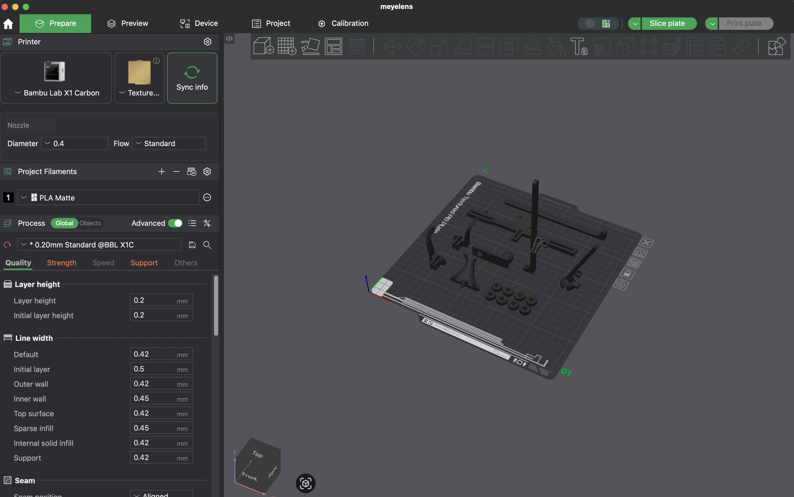
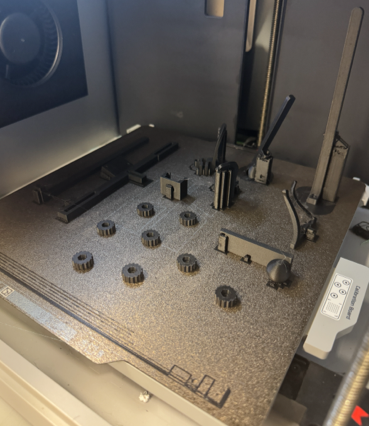
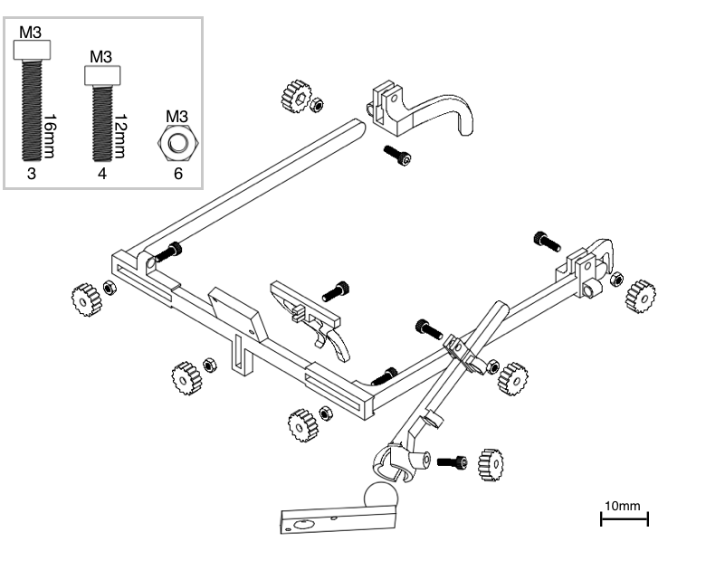
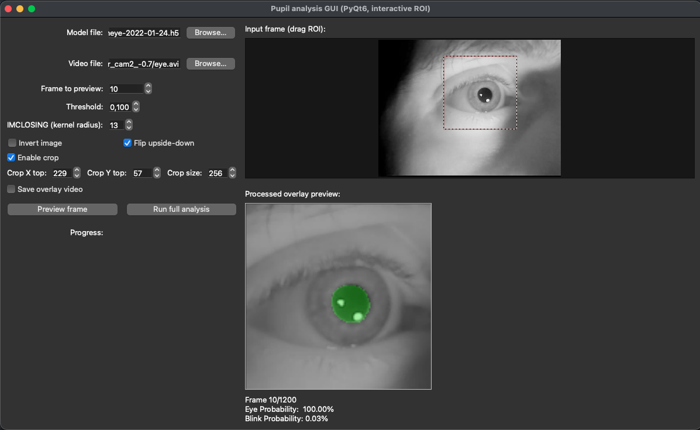

MEYELens
MEYELens: 3D-Printable Wearable System for Pupillometry and Gaze Tracking

MEYELens is a low-cost, modular, 3D-printable eyewear platform for pupillometry and gaze tracking, designed to be reproducible and adaptable across research and clinical contexts. The project includes printable hardware, acquisition scripts, and an open-source processing toolkit (meyelens) providing both a Python API and a GUI for offline analysis.
This project is based on MEYE
3D PRINT
3D printing files are in the 3d_print_files/ folder.
If you have a Bambu Lab printer, you can also find them on MakerWorld
The files are also uploaded to NIH 3D

We used Bambu Lab Matte Black PLA.
Print settings (Bambu Studio baseline profile with fixed infill):
0.2 mm layer height, 0.4 mm nozzle
Supports enabled, 2 wall loops
~50% gyroid infill (lower infill may reduce print time)
~55 g filament, ~3 hours (printer-dependent)

CAMERAS (TESTED CONFIGURATIONS)
The platform supports:
Single camera: pupillometry (optionally chin-rest gaze tracking)
Dual camera: eye + world camera for naturalistic gaze tracking

Tested camera modules:
GC0307 (640×480, nominal 30 Hz; IR-cut removed; external 96-LED IR illuminator)
GC0308 (640×480, nominal 30 Hz; built-in IR LEDs; 50° eye lens, 80° world lens)
Note: low-cost camera modules may not sustain the advertised FPS. In our tests, we often limited capture to 20 fps for stability.
ASSEMBLY
Assembly uses mostly standard fasteners:
M3 × 16 mm (×3) - frame joints
M3 × 12 mm (×4) - ear supports, camera arm, ball joint
M3 nuts (×6) - except the ball-bearing anchor (as used in our build)
M2 × 10 mm + M2 nuts - camera mounting
Exploded view / assembly diagram:

MEYELens SOFTWARE
Install
We recommend using a dedicated environment:
conda create -n meyelens python=3.10 -y
conda activate meyelens
pip install meyelens[tf]
This installs a standard TensorFlow dependency set, which may run on CPU depending on your system.
TensorFlow GPU support (optional)
If you want to manage TensorFlow yourself (e.g., to enable GPU support), install MEYELens without TensorFlow and then follow TensorFlow’s official installation guide:
pip install meyelens
Then install TensorFlow following:
https://www.tensorflow.org/install/pip
GPU enablement depends on your OS, CUDA/cuDNN compatibility, and TensorFlow version. Follow the TensorFlow guide exactly for your platform.
Documentation
API documentation: https://raffaelemazziotti.github.io/MEYElens/
UTILIZING THE PACKAGE
We provide examples to use the library:
Quick test
To quickly check that the camera and Meye model are working:
from meyelens import meye, camera
cam = camera.Camera(camera_ind=0) # Select the correct camera index for your setup.
meye = meye.Meye()
meye.preview(cam)
offline_recorder
Records a video and a .csv with trigger markers sent through keypresses.
Controls:
1–9: send trigger markers
S: start recording
E: stop recording
Q: quit
online_recorder
Same behavior, but runs online prediction and does not save the video.
gaze_tracking_example
Runs a calibration process and then shows the predicted gaze on a gray background.
OFFLINE GUI (PUPIL PROCESSING)
If you recorded videos through the offline_recorder (or have your own IR eye videos), you can run the offline GUI:
conda activate meyelens
python -m meyelens_offlinegui

GUI workflow:
Select a model file (the packaged model is detected automatically when available).
Select a video file.
Preview a frame and adjust parameters (threshold / closing / invert / flip), then drag the ROI box.
Run full processing.
Outputs:
*_pupil.csvwritten next to the input videoOptional overlay QC video (if enabled)
CITATION
If you use MEYELens in your work, please cite the following papers:
MEYELens: 3D-Printable Wearable System for Pupillometry and Gaze Tracking
G. Vecchieschi, L. Ingenito, A. Benedetto, C. Luciani, F. Carrara, G. Cioni, A. Guzzetta, T. Pizzorusso, L. Baroncelli, R. M. Mazziotti
DOI: [ADD LINK]
MEYE: Web App for Translational and Real-Time Pupillometry
R. Mazziotti, F. Carrara, A. Viglione, L. Lupori, L. Lo Verde, A. Benedetto, G. Ricci, G. Sagona, G. Amato, T. Pizzorusso
eNeuro (2021) 8(5): ENEURO.0122-21.2021
DOI: https://doi.org/10.1523/ENEURO.0122-21.2021
LICENSE
Code: GPL-3.0 license
Hardware files: CERN-OHL-P-2.0
CONTACT
Raffaele M. Mazziotti
Email: raffaelemario.mazziotti@unifi.it
Giacomo Vecchieschi
Email: giacomovecchieschi@gmail.com